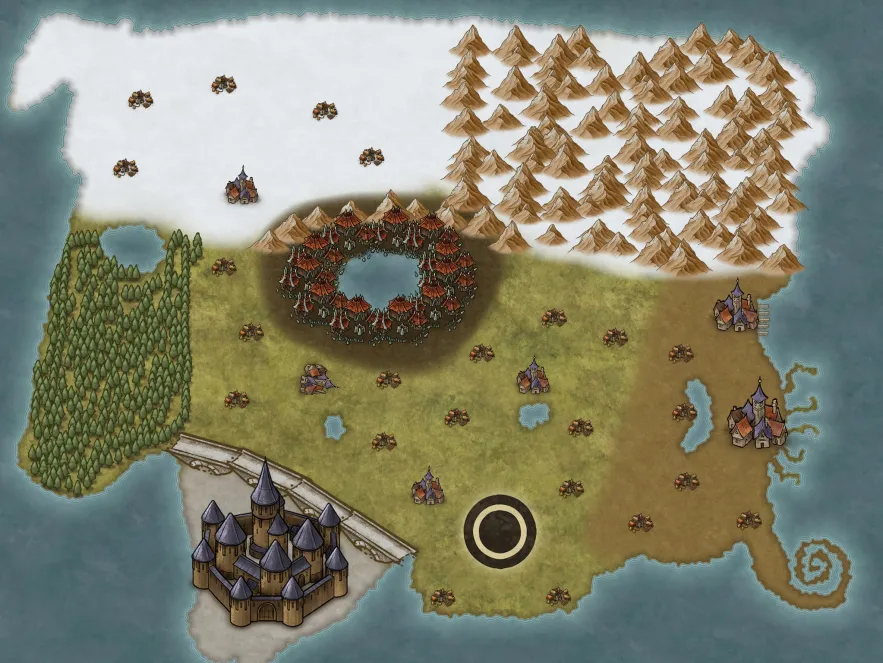

Home
Welcome to Etherim
Session 0 at the end of october

the nations of the realm
- spiral coast - the merchant nation originally founded by pirates, if someone will pay for it you can find it here however you keep the darkness in the shadows
- Endalor- The theocratic nation who worships the sun and believe those who are closest to the sun are more divine most noticeable by the tower city that shares the same name having caste system putting priest and royalty on the upper floor and given many luxuries
- Reshaton- a nation build behind a massive wall, they put honor above all else! knights and nobles will even pay for dishonorable deeds by execution due the honor associated with their status. they believe in many paths to build honor but one nearly retired practice to hunt monstrous beasts as proof of courage and strength
- The First Forest- also know as the forgotten woods or the Faery Forest, this a forest that appears to a fae wilds on the material planes this region is fraught with many mysterious dangers few who enter ever leave
- The marshes- A nation of monstrous races governed by a strict code of pacifism, they use to roam the entire continent as many separate tribes but after centuries of war with humanoid races and each other several have settles in the marshlands and built a powerful but defensive nation that values peace above all things
- The grass plains- unclaimed region that is part of many territory squabbles of the other nations, it mostly farm lands in this region littered with small villages
- the snowy plains- snow lands settled by humanoid races the prefer the cold and often will trade with the neighboring marshes and snowy mountain ranges
- the snowy mountain- a region inhabited by many tribes of giant-kin, they will just as often trade with the snowy plains as they will raid them mostly dependent on their negations success as well as how plentiful the bounty of the mountains are this year
Join the game today!